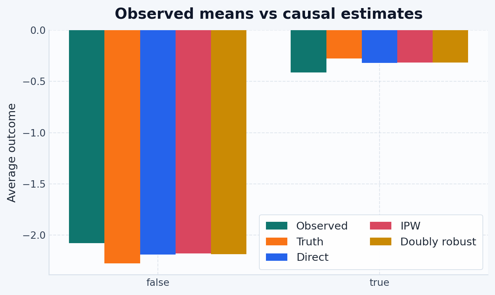

graph LR X["Covariates X"] --> T["Treatment T"] X --> Y["Outcome Y"] T --> Y
Use this guide when the treatment is a binary flag — such as treated vs. control.
NoteWhen To Use This Guide
In skcausal, binary treatments are handled by the categorical-treatment estimators. If your treatment column is boolean, this is the guide to start with.
What we’re estimating
Imagine two parallel worlds: one where everyone receives treatment (True), and one where no one does (False). The average potential outcome under each treatment is the average outcome in each world.
We can never observe both worlds at once. Instead, we use observed covariates X to correct for confounding — the fact that who receives treatment depends on factors that also affect the outcome.
The arrow from X to T is confounding. Removing its influence requires assumptions about either the outcome model or the treatment-assignment model.
skcausal offers three strategies:
| Estimator | Key model | Consistent when |
|---|---|---|
CategoricalDirectMethod |
outcome \(E[Y \mid X, T]\) | outcome model is correct |
CategoricalInversePropensityWeighting |
propensity \(P(T \mid X)\) | propensity model is correct |
CategoricalDoublyRobust |
both | either model is correct |
Note
These consistency statements assume the usual causal identification conditions: consistency, no unmeasured confounding after conditioning on X, and overlap between treated and control groups.
Tip
Start with doubly robust. Use direct and IPW as sanity checks — if all three land far apart, revisit your nuisance models.
Step 1: Import dependencies
import numpy as np
import polars as pl
import matplotlib.pyplot as plt
from sklearn.linear_model import LinearRegression, LogisticRegression
from skcausal.causal_estimators import (
CategoricalDirectMethod,
CategoricalDoublyRobust,
CategoricalInversePropensityWeighting,
)
from skcausal.datasets import SyntheticDataset2Discrete
from skcausal.density.sklearn import SklearnCategoricalDensity
from skcausal.plotting import use_theme
use_theme(){'figure.facecolor': '#F4F7FB',
'figure.figsize': (8.0, 4.8),
'savefig.facecolor': '#F4F7FB',
'axes.facecolor': '#FBFCFE',
'axes.edgecolor': '#D7E0EA',
'axes.linewidth': 0.9,
'axes.grid': True,
'axes.axisbelow': True,
'axes.spines.top': False,
'axes.spines.right': False,
'axes.titlecolor': '#0F172A',
'axes.titlesize': 15,
'axes.titleweight': 'bold',
'axes.titlepad': 12.0,
'axes.labelcolor': '#1F2937',
'axes.labelsize': 11.5,
'axes.prop_cycle': cycler('color', ['#0F766E', '#F97316', '#2563EB', '#D9465F', '#CA8A04', '#16A34A']),
'grid.color': '#CBD5E1',
'grid.alpha': 0.55,
'grid.linewidth': 0.8,
'grid.linestyle': '--',
'legend.frameon': True,
'legend.framealpha': 0.95,
'legend.facecolor': '#FFFFFF',
'legend.edgecolor': '#D7E0EA',
'legend.fancybox': True,
'legend.borderpad': 0.6,
'font.size': 11.0,
'font.family': 'sans-serif',
'font.sans-serif': ['Avenir Next',
'Avenir',
'Helvetica Neue',
'Arial',
'DejaVu Sans'],
'text.color': '#1F2937',
'xtick.color': '#334155',
'ytick.color': '#334155',
'xtick.labelsize': 10,
'ytick.labelsize': 10,
'xtick.major.size': 0,
'ytick.major.size': 0,
'lines.linewidth': 2.4,
'lines.markersize': 6.5,
'patch.linewidth': 0.75,
'patch.edgecolor': '#FFFFFF',
'errorbar.capsize': 3.0,
'axes.formatter.use_mathtext': True}Step 2: Load the data
dataset = SyntheticDataset2Discrete(n=500, random_state=0)
X, t, y = dataset.retrieve()
X = X.rename({col: f"x{i}" for i, col in enumerate(X.columns)})
y = y.rename({y.columns[0]: "y"})
pl.concat([X.head(5), t.head(5), y.head(5)], how="horizontal")
shape: (5, 8)
| x0 | x1 | x2 | x3 | x4 | x5 | treatment | y |
|---|---|---|---|---|---|---|---|
| f64 | f64 | f64 | f64 | f64 | f64 | bool | f64 |
| 1.304 | 0.947081 | -0.703735 | -1.265421 | -0.623274 | 0.041326 | false | -1.480789 |
| -2.325031 | -0.218792 | -1.245911 | -0.732267 | -0.544259 | -0.3163 | true | 0.469168 |
| 0.411631 | 1.042513 | -0.128535 | 1.366463 | -0.665195 | 0.35151 | true | -0.702529 |
| 0.90347 | 0.094012 | -0.743499 | -0.921725 | -0.457726 | 0.220195 | false | -3.400936 |
| -1.009618 | -0.209176 | -0.159225 | 0.540846 | 0.214659 | 0.355373 | true | -1.142907 |
t contains one boolean column. Rows where treatment is True received the intervention; False rows are controls.
Step 3: Define the treatment levels to evaluate
levels = pl.DataFrame({"treatment": [False, True]})This two-row table specifies the interventions we want to compare — one row per “world”.
Note
Predict API contract: estimator.predict(X, t) requires X and t to have the same number of rows. To evaluate a fixed set of levels across all n observations, we tile levels to match X.height, predict row by row, and then average back to one value per level. The helpers below implement this pattern.
def repeat_levels_to_match_X(levels: pl.DataFrame, n_rows: int) -> pl.DataFrame:
repeats = (n_rows + levels.height - 1) // levels.height
return pl.concat([levels] * repeats, how="vertical").head(n_rows)
def summarize_level_predictions(estimator, X, levels, column_name):
repeated_levels = repeat_levels_to_match_X(levels, X.height)
predictions = np.asarray(estimator.predict(X, repeated_levels), dtype=float).reshape(-1)
return (
repeated_levels.with_columns(pl.Series(column_name, predictions))
.group_by(levels.columns)
.agg(pl.col(column_name).mean())
.sort(levels.columns)
)Step 4: Fit the estimators
Direct method
CategoricalDirectMethod fits a regression model for \(E[Y \mid X, T]\) and averages its predictions at each treatment level:
direct = CategoricalDirectMethod(outcome_regressor=LinearRegression())
_ = direct.fit(X, t, y)
direct_summary = summarize_level_predictions(direct, X, levels, "direct")This relies entirely on the outcome model — no propensity model is needed or fitted.
Inverse propensity weighting
CategoricalInversePropensityWeighting uses inverse-probability-style correction terms derived from \(P(T \mid X)\). With the default target_density_kind="stabilized" used here, the effective correction scale is \(P(T=t) / P(T=t \mid X)\) rather than a raw \(1 / P(T=t \mid X)\) weight:
density_estimator = SklearnCategoricalDensity(LogisticRegression(max_iter=1000))
ipw = CategoricalInversePropensityWeighting(density_estimator=density_estimator)
_ = ipw.fit(X, t, y)
ipw_summary = summarize_level_predictions(ipw, X, levels, "ipw")
Warning
IPW can become unstable when some observations have near-zero propensity scores. If treated and control groups barely overlap in X-space, prefer doubly robust.
Doubly robust
CategoricalDoublyRobust combines both models. A residual correction derived from the treatment model adjusts the direct estimate; under the identification conditions above, consistency can hold if either nuisance model is correctly specified:
dr = CategoricalDoublyRobust(
density_estimator=density_estimator,
outcome_regressor=LinearRegression(),
)
_ = dr.fit(X, t, y)
dr_summary = summarize_level_predictions(dr, X, levels, "dr")Step 5: Compare to the truth
SyntheticDataset2Discrete has a known data-generating process, so we can check the estimates against true average potential outcomes:
truth = levels.with_columns(
pl.Series("truth", np.asarray(dataset.predict(X, levels), dtype=float).reshape(-1))
)
observed_means = (
t.with_columns(y["y"])
.group_by("treatment")
.agg(pl.col("y").mean().alias("observed"))
.sort("treatment")
)
comparison = (
truth
.join(direct_summary, on="treatment")
.join(ipw_summary, on="treatment")
.join(dr_summary, on="treatment")
.join(observed_means, on="treatment")
)
comparison
shape: (2, 6)
| treatment | truth | direct | ipw | dr | observed |
|---|---|---|---|---|---|
| bool | f64 | f64 | f64 | f64 | f64 |
| false | -2.274333 | -2.189211 | -2.177128 | -2.186807 | -2.078307 |
| true | -0.274333 | -0.317415 | -0.313761 | -0.313586 | -0.412227 |
Each row is one treatment level. Columns closer to truth indicate a more accurate estimate of the average potential outcome under that intervention.
plot_frame = comparison.with_columns(pl.col("treatment").cast(pl.Utf8))
labels = plot_frame["treatment"].to_list()
x = np.arange(len(labels))
width = 0.16
fig, ax = plt.subplots(figsize=(8, 4.5))
series = [("observed", "Observed"), ("truth", "Truth"), ("direct", "Direct"), ("ipw", "IPW"), ("dr", "Doubly robust")]
for index, (column, label) in enumerate(series):
ax.bar(x + (index - 2) * width, plot_frame[column].to_numpy(), width, label=label)
ax.set_xticks(x, labels)
ax.set_ylabel("Average outcome")
ax.set_title("Observed means vs causal estimates")
ax.legend(ncols=2)
plt.show()
The Observed bars are the naive sample averages among units who actually received each treatment level. Their gap from Truth is the confounding problem; the other bars show how each estimator tries to remove that bias.
Note
Ground truth is only available with synthetic datasets. On real data, compare the estimators to each other and to domain knowledge rather than to a known ground truth.
The API pattern
Every categorical estimator follows the same three-step workflow:
- Fit on observed
X,t, andy. - Build a treatment table with the levels to compare.
- Predict the average potential outcome for each level.
What to try next
If your treatment has more than two levels, continue to the categorical treatments guide.
If you want a richer continuous-treatment benchmark with a full dose-response curve, open the SyntheticDataset2 walkthrough.